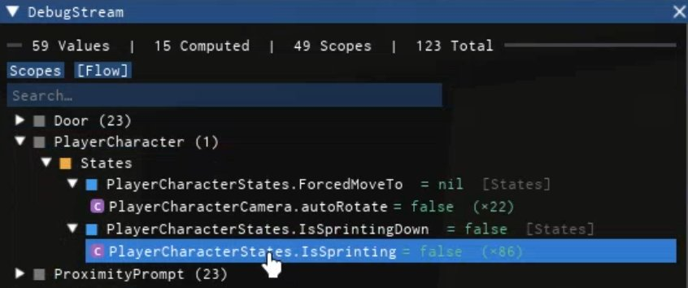

Stream
A reactive state library for Roblox
Getting Started
Overview #
Stream is a reactive state library for Roblox. It provides values that hold state, computed values that automatically derive from other state, listeners that react to changes, and scopes that manage these for easy cleanup. It also has a built-in debugger using Iris.
local Stream = require(game.ReplicatedStorage.Stream)
local scope = Stream.Scope("Demo", "Counter")
-- Values hold reactive state
local count = scope:Value(0)
-- Computeds automatically re-evaluate when dependencies change
local doubled = scope:Computed(function()
return count:get() * 2
end)
-- Listeners fire a callback whenever a value changes
scope:Listen(doubled, function(old, new)
print("doubled:", old, "→", new)
end)
count:set(5) -- prints "doubled: 0 → 10"
-- Destroy the scope to clean up everything
scope:Destroy()scope:Value(), scope:Listen(), etc.) that automatically clean up when the scope is destroyed. When using the top-level Stream.* functions directly, you are responsible for calling :Destroy() on values/computeds and calling the returned disconnect function from listeners, bindings, and observers.
Debugger #
Stream includes a built-in visual debugger powered by Iris. It gives you a live view of every value, computed, and scope in your game, with change history, dependency tracking, and leak detection.

The debugger has two views:
- Scopes — shows all objects organized by their scope, with categories and item counts. Leaked objects (those whose scope was destroyed but weren't cleaned up) are highlighted in red.
- Flow — shows the reactive dependency graph. Values appear as roots, with their computed dependents nested as children. You can trace how data flows through your system.
Clicking any object opens the Inspector, which shows the current value, update count, age, scope, dependencies, listeners, and a change history log.
Setup
Call EnableDebug immediately after requiring Stream, before any objects are created. Pass in an initialized Iris instance.
local Stream = require(game.ReplicatedStorage.Stream.StreamRuntime)
local Iris = require(script.Iris)
Iris.Init()
local DebugWidget = Stream.EnableDebug(Iris)
DebugWidget:Open()Variable names
By default, objects are labeled by their source file and line number. For nicer labels like PlayerCharacterStates.IsSprinting, run the GenerateVariableNames script in Studio's command bar. It parses your scripts and maps line numbers to variable names, outputting a StreamDebug_VariableNames ModuleScript that the debugger reads automatically.
COMMITTED_SOURCE_ONLY setting at the top of the command-bar script to control whether it reads from committed source (.Source) or the current editor source (ScriptEditorService:GetEditorSource). Use editor source if you want names to update without committing your changes first.
Installation #
Place the StreamRuntime ModuleScript in ReplicatedStorage (or wherever your shared modules live) and require it:
local Stream = require(game.ReplicatedStorage.Stream.StreamRuntime)For the debug tools, Iris is required as an external dependency. See EnableDebug.
Examples #
Reactive game state
A common pattern is a module that exposes reactive state for other systems to read. Set a Value, and any Computed that depends on it re-evaluates automatically.
local Stream = require(game.ReplicatedStorage.Stream)
local GameState = {
CameraEnabled = Stream.Value(true),
}
-- Other modules can derive from this without polling
GameState.NotCameraEnabled = Stream.Computed(function()
return not GameState.CameraEnabled:get()
end)
return GameStateAnywhere else in your codebase, reading GameState.CameraEnabled:get() inside a Computed or Observe will automatically subscribe to updates — no manual wiring needed.
Binding to Instances
Use Bind to drive Instance properties directly from reactive state. When the state changes, the property updates automatically.
local scope = Stream.Scope("PlayerCharacter", "Camera")
local autoRotate = scope:Computed(function()
return GameState.NotCameraEnabled:get()
end)
-- Humanoid.AutoRotate stays in sync with the computed
scope:Bind(humanoid){
AutoRotate = autoRotate,
}
-- Head transparency follows camera state
local headTransparency = scope:Computed(function()
return if GameState.CameraEnabled:get() then 1 else 0
end)
scope:Bind(head){
Transparency = headTransparency,
}Scoped game objects
Tie a scope's lifetime to a game object. When the object is cleaned up, everything in the scope — values, computeds, listeners, connections — is destroyed automatically.
local function setupDoor(doorModel)
local scope = Stream.Scope("Door")
local isOpen = scope:Value(false)
-- Observe runs immediately, then on every change
-- The returned cleanup runs before the next call
scope:Observe(isOpen, function(open)
if open then
playSound("Door.Open")
animateOpen(doorModel)
else
playSound("Door.Close")
animateClosed(doorModel)
end
end)
-- Bind the prompt text to the door state
scope:Observe(isOpen, function(open)
prompt:SetAttribute("ActionText",
if open then "Close" else "Open")
end)
return scope -- caller destroys when door is removed
endCore API
Stream.Value() VALUE #
Creates a StreamValue — a reactive container that holds a single value and notifies listeners whenever it changes.
function Stream.Value(value: any): StreamValueThe returned StreamValue has no dependencies. It is a root-level piece of state you update manually via :set(). Listeners are notified on the next deferred batch.
local counter = Stream.Value(0)
counter:set(10)
print(counter:get()) -- 10:Destroy() when you're done with an unscoped value, or it will leak. Use scope:Value() for automatic cleanup.
Stream.Computed() COMPUTED #
Creates a StreamComputedValue. Its value is derived from other stream objects and automatically re-computed when its dependencies change.
function Stream.Computed(callback: () -> any): StreamComputedValueDependencies are tracked automatically — any StreamValue or StreamComputedValue read via :get() inside the callback is registered as a dependency. When a dependency changes, the callback re-runs and the computed value updates. If the computed value itself changed, its own listeners are notified.
The callback is evaluated once immediately upon creation.
local count = Stream.Value(10)
local doubled = Stream.Computed(function()
return count:get() * 2
end)
print(doubled:get()) -- 20
count:set(20)
-- doubled will recompute to 40:Destroy() when you're done with an unscoped computed, or it will leak. Use scope:Computed() for automatic cleanup.
Stream.Computed inside another Computed's callback. This is unsupported and will lead to unexpected behavior.
Stream.Listen() #
Creates a listener that fires a callback whenever a stream value changes. Can also be used with Instances or tables to bind to property, attribute, and event changes.
function Stream.Listen(
target: StreamObject,
callback: (any, any) -> ()
): DisconnectThe callback receives (oldValue, newValue) each time the value changes.
function Stream.Listen(
target: Instance | table
): (propertiesTable) -> DisconnectReturns a curried function that accepts a properties table — behaving like Stream.Bind but connecting change listeners instead of setting properties. Use Changed_, Attribute_, and Event_ prefixed keys for Instance targets.
scope:Listen() for automatic cleanup.
local counter = Stream.Value(0)
local disconnect = Stream.Listen(counter, function(old, new)
print(old, new)
end)
counter:set(10) -- prints "0 10"
disconnect() -- stop listeninglocal disconnect = Stream.Listen(workspace){
Changed_AirDensity = function(old, new) end,
Attribute_SomeAttribute = function(old, new) end,
}Stream.Observe() #
Runs a callback immediately with the current value, then re-runs it whenever the value changes. The callback may return a cleanup function.
function Stream.Observe(
target: StreamObject,
callback: (any) -> Disconnect?
): DisconnectUnlike Listen, the callback receives only the new value (not the old). It is called once immediately with the current value. If the callback returns a function, that function is called as cleanup before the next re-run and when disconnected.
scope:Observe() for automatic cleanup.
local state = Stream.Value("Idle")
local disconnect = Stream.Observe(state, function(newVal)
print("New value", newVal)
return function()
print("No longer", newVal)
end
end)
-- Prints "New value Idle"
state:set("Running")
-- Prints "No longer Idle", then "New value Running"Stream.Bind() #
Binds properties of an Instance or table to stream values. When a bound stream changes, the target's property is automatically updated.
function Stream.Bind(
target: Instance | table
): (propertiesTable) -> DisconnectReturns a curried function. Call it with a table mapping property names to stream values (or static values). For Instance targets, use prefixed keys to connect to events, attribute changes, and property changes:
Event_<name>— connects totarget[name]:Connect(callback)Attribute_<name>— listens for attribute changes, fires(oldValue, newValue)Changed_<name>— listens for property changes, fires(oldValue, newValue)
Properties set to a StreamValue or StreamComputedValue are applied immediately and updated whenever the stream changes. Static values are applied once.
scope:Bind() for automatic cleanup.
local myTable = { score = 0 }
local counter = Stream.Value(10)
local disconnect = Stream.Bind(myTable){
score = counter
}
counter:set(20)
print(myTable.score) -- 20local disconnect = Stream.Bind(myPart){
Transparency = Stream.Value(0.5),
[Stream.Changed.Color] = function(old, new) end,
[Stream.Attribute.Health] = function(old, new) end,
[Stream.Event.Touched] = function(hit) end,
}Stream.New() #
Creates a new Instance (or custom object) and binds properties to it in one step.
function Stream.New(
className: string,
parent: Instance?
): (propertiesTable) -> (Instance, Disconnect)
function Stream.New(
constructor: function,
...
): (propertiesTable) -> (table, Disconnect)The first argument is either a Roblox class name string or a constructor function. Additional arguments are forwarded. Returns a curried function that accepts a properties table (same format as Stream.Bind) and returns the instance plus a cleanup function.
local label, cleanup = Stream.New("TextLabel", parentInstance)({
Text = Stream.Value("Hello, World!")
})StreamObject Methods
StreamValue:get() VALUE #
Returns the current value. If called inside a Computed callback, registers this value as a dependency.
function StreamValue:get(): anyStreamValue:set() VALUE #
Sets the value. If the value changed, listeners are notified on the next deferred batch.
function StreamValue:set(value: any)Uses ~= for equality checking. If the new value is the same as the current value, no notification is triggered. The internal value is updated immediately but listener callbacks are deferred via task.defer, allowing multiple :set() calls within the same frame to be coalesced into a single notification pass.
StreamValue:Destroy() VALUE #
Cleans up the value: disconnects all listeners, removes from pending changes, and severs dependency links.
function StreamValue:Destroy()StreamComputedValue:get() COMPUTED #
Returns the current computed value. If called inside another Computed, registers as a dependency.
function StreamComputedValue:get(): anyStreamComputedValue:Destroy() COMPUTED #
Unsubscribes from all dependencies, cleans up all listeners, and removes from pending changes.
function StreamComputedValue:Destroy()Scope API
Stream.Scope() SCOPE #
Creates a new scope for managing the lifetime of stream objects and other cleanable items. When destroyed, all items are cleaned up in reverse order.
function Stream.Scope(
category: string?,
displayName: string?
): StreamScopeThe optional category and displayName are used by the debugger to organize and label scopes. A scope can hold any combination of stream objects, connections, instances, threads, functions, or tables with Destroy/Disconnect methods.
local scope = Stream.Scope("UI", "HealthBar")
local hp = scope:Value(100)
local label = scope:Computed(function()
return hp:get() .. " HP"
end)
scope:Destroy() -- Cleans up label first, then hpScope:Add() #
Adds any cleanable item to the scope. Returns the item for inline use.
function StreamScope:Add<T>(item: T): TAccepted item types: functions (called on cleanup), RBXScriptConnection (disconnected), Instance (destroyed), threads (cancelled), or tables with Destroy/Disconnect methods.
scope:Add(workspace.ChildAdded:Connect(function(child)
print(child.Name)
end))
scope:Add(function()
print("Scope destroyed!")
end)Scope:InnerScope() #
Creates a child scope owned by this scope. Destroyed automatically when the parent is destroyed.
function StreamScope:InnerScope(category: string?, displayName: string?): StreamScopeScope:Value() #
Shorthand for scope:Add(Stream.Value(value)).
function StreamScope:Value(value: any): StreamValueScope:Computed() #
Shorthand for scope:Add(Stream.Computed(callback)).
function StreamScope:Computed(callback: () -> any): StreamComputedValueScope:Bind() #
Returns a curried bind function whose cleanup is added to the scope.
function StreamScope:Bind(target: Instance | table): (propertiesTable) -> DisconnectScope:Observe() #
Shorthand for scope:Add(Stream.Observe(target, callback)).
function StreamScope:Observe(target: StreamObject, callback: (any) -> Disconnect?): DisconnectScope:Listen() #
If args is provided, shorthand for scope:Add(Stream.Listen(target, args)). If args is nil, returns a curried bind-listen function whose cleanup is added to the scope.
function StreamScope:Listen(
target: StreamObject,
callback: (any, any) -> ()
): Disconnect
function StreamScope:Listen(
target: Instance | table
): (propertiesTable) -> DisconnectScope:FromProperty() #
Creates and owns a StreamValue bound to an Instance property. The stream updates when the property changes.
function StreamScope:FromProperty(instance: Instance, prop: string): StreamValueScope:FromValueBase() #
Creates and owns a StreamValue bound to a ValueBase (IntValue, StringValue, etc.).
function StreamScope:FromValueBase(valueBase: ValueBase): StreamValueScope:FromAttribute() #
Creates and owns a StreamValue bound to an Instance attribute. Optional callback fires on changes and once immediately with (nil, currentValue).
function StreamScope:FromAttribute(
instance: Instance,
attributeName: string,
callback: ChangeCallback?
): StreamValuelocal health = scope:FromAttribute(part, "Health", function(old, new)
print("Health:", old, "->", new)
end)Scope:Destroy() #
Destroys all items in the scope in reverse order. Safe to call multiple times.
function StreamScope:Destroy()Utility
Stream.BindToInstanceProperty() #
Binds an Instance property to a StreamValue so that whenever the property changes on the Instance, the stream is updated via :set().
function Stream.BindToInstanceProperty(
stateObject: StreamValue,
instance: Instance,
prop: string
): Disconnectlocal transparency = Stream.Value(part.Transparency)
local disconnect = Stream.BindToInstanceProperty(transparency, part, "Transparency")Stream.FromProperty() #
Creates a StreamValue initialized to the current value of an Instance property and bound to its property changed signal.
function Stream.FromProperty(
instance: Instance,
prop: string
): (StreamValue, Disconnect):Destroy() the StreamValue when done. Use scope:FromProperty() for automatic cleanup.
local transparency, disconnect = Stream.FromProperty(part, "Transparency")Stream.FromValueBase() #
Creates a StreamValue from a Roblox ValueBase (IntValue, StringValue, etc.) and binds its .Value property.
function Stream.FromValueBase(
valueBase: ValueBase
): (StreamValue, Disconnect):Destroy() the StreamValue when done. Use scope:FromValueBase() for automatic cleanup.
local stream, disconnect = Stream.FromValueBase(workspace.MyIntValue)Stream.FromAttribute() #
Creates a StreamValue from an Instance attribute. Optional callback fires on changes and once immediately with (nil, currentValue).
function Stream.FromAttribute(
instance: Instance,
attributeName: string,
callback: ChangeCallback?
): (StreamValue, Disconnect):Destroy() the StreamValue when done. Use scope:FromAttribute() for automatic cleanup.
local stream, disconnect = Stream.FromAttribute(part, "Health", function(old, new)
print("Health changed:", old, "->", new)
end)Helpers
Helpers HELPER #
Key-name helpers for use in Bind and Listen properties tables. These use metatables to produce prefixed string keys.
Stream.Event[name] -- produces "Event_<name>"
Stream.Attribute[name] -- produces "Attribute_<name>"
Stream.Changed[name] -- produces "Changed_<name>"Stream.Bind(myPart){
[Stream.Event.Touched] = function(hit) end,
[Stream.Attribute.Health] = function(old, new) end,
[Stream.Changed.Transparency] = function(old, new) end,
}Debug
Stream.EnableDebug() DEBUG #
Enables the debug explorer with change logging, dependency tracking, etc.
function Stream.EnableDebug(Iris: any): DebugWidget?Must be called immediately after requiring Stream, before any objects are created. Requires Iris as an external dependency — pass the initialized Iris instance as the first argument.
When debug is disabled (the default), there is zero debug overhead. The debug module (StreamDebug) must exist as a child of the Stream runtime script.
Returns a DebugWidget with :Open() and :Close() methods, or nil if debug was already enabled.
local Stream = require(game.ReplicatedStorage.Stream.StreamRuntime)
-- Iris is an external dependency
local Iris = require(script.Iris)
Iris.Init()
local DebugWidget = Stream.EnableDebug(Iris)
DebugWidget:Open()For the debugger to display variable names instead of line numbers, run the GenerateVariableNames command-bar script in Studio. It parses all scripts for Stream object creation calls and maps line numbers to variable names, outputting a StreamDebug_VariableNames ModuleScript.
Notes
Notes #
Dependency flow
Dependencies should flow downward. A stream's dependencies should live at least as long as it does. A short-lived scope reading from a long-lived scope is safe; the reverse may cause the dependent to go stale.
-- ✓ Safe: short-lived scope reads long-lived state
local appState = Stream.Value("idle")
local uiScope = Stream.Scope("UI", "Panel")
local label = uiScope:Computed(function()
return "State: " .. appState:get()
end)
uiScope:Destroy() -- appState is unaffectedComputed nesting
Do not create Stream.Computed inside another Computed's callback. Each computed should be declared at scope level.
Circular dependencies
Circular dependencies (A → B → A) are detected at runtime after 100 cascading updates and will throw an error with diagnostic information listing the involved objects.
Deferred batching
All change notifications are deferred via task.defer. Multiple :set() calls within the same frame are coalesced into a single notification pass. This means :get() returns the new value immediately after :set(), but listeners haven't been notified yet.
local v = Stream.Value(0)
v:set(1)
v:set(2)
v:set(3)
-- Listeners fire once with oldValue=0, newValue=3Type Reference #
export type StreamValue = {
get: (self: StreamValue) -> any,
set: (self: StreamValue, value: any) -> (),
Destroy: (self: StreamValue) -> (),
}
export type StreamComputedValue = {
get: (self: StreamComputedValue) -> any,
Destroy: (self: StreamComputedValue) -> (),
}
export type StreamObject = StreamValue | StreamComputedValue
export type StreamScope = {
Add: <T>(self: StreamScope, item: T) -> T,
InnerScope: (self: StreamScope, category: string?, displayName: string?) -> StreamScope,
Value: (self: StreamScope, value: any) -> StreamValue,
Computed: (self: StreamScope, callback: () -> any) -> StreamComputedValue,
Bind: (self: StreamScope, target: Instance | table) -> (PropertiesTable) -> Disconnect,
Observe: (self: StreamScope, target: StreamObject, callback: ObserveCallback) -> Disconnect,
Listen: (self: StreamScope, target: any, args: any?) -> any,
FromProperty: (self: StreamScope, instance: Instance, prop: string) -> StreamValue,
FromValueBase: (self: StreamScope, valueBase: ValueBase) -> StreamValue,
FromAttribute: (self: StreamScope, instance: Instance, attr: string, cb: ChangeCallback?) -> StreamValue,
Destroy: (self: StreamScope) -> (),
}
type Disconnect = () -> ()
type ChangeCallback = (oldValue: any, newValue: any) -> ()
type ObserveCallback = (value: any) -> Disconnect?Stream — Released under the MIT License